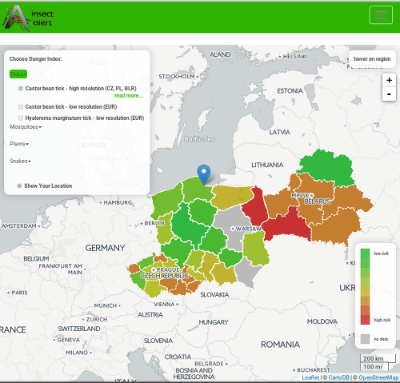
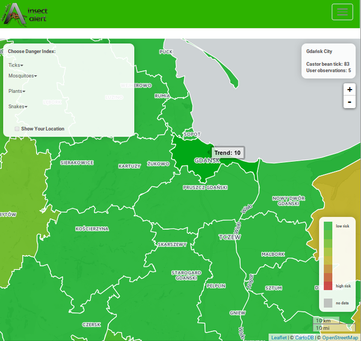
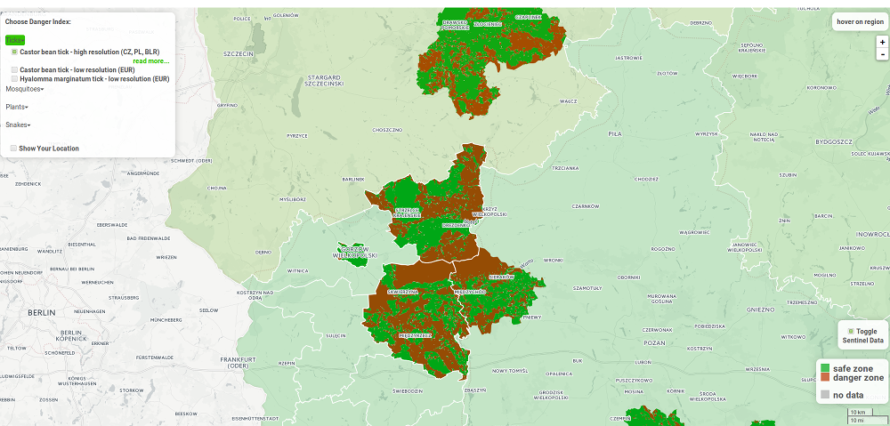

The "Project" page is your starting point for browsing Insect Alert site. Open a new page by clicking the name of it. You can choose from one of five webpages - - Project, Knowledge Base, How to use, About, Status.
Project webpage is the main page, where you can obtain all of interesting information.
Knowledge Base webpage contains theoretical information about selected vectors.
How to use is this page with tutorial.
About and
First of all, you need to decide which of Danger Index you want to see. There are four choices: Ticks, Mosquitoes, Plants and Snakes. Every time you click on the name of Danger Index, more options will show up. You can choose the view of countries in high or low resolutions.
When you choose one of options you can click on "read more" and see webpages about selected data and diseases spreading by selected vectors. There is also information about dangerous plants and animals which is not connected to the vector-borne diseases. If you click the "Proceed" button the map will show up. Please see the picture below.
You can hover the mouse over the region and then information about the spread of the vector will appear in the top-right window.
For some countries (like Poland or the Czech Republic) after left-clicking on the region you will see more detailed map with the higher spatial resolution.
After right-clicking on the region, it's possible to add your observations. You need to write only your name and information of when you were in contact with the vector. Information from users is available in the right window on the main page (see the image above).
You may also check the more detailed data from Sentinel 2 images. By marking "Toggle Sentinel Data" (just above the Legend) you may choose view of the new vector layer. This layer is available only for Ixodes Ricinus Tick and areas of Poland at this time.
You can access Knowledge Base by clicking "Read more..." during the selection of Danger Index or by clicking link on the menu at the top of the page. Knowledge Base contains:
a) Information about dangerous species;
b) Information about vector-borne diseases and other threats for people;
c) Information about data (metadata);
d) Access to raw data, which you can use for your projects.
We highly recommended to check Knowledge Base. Spatial data without medical information is incomplete.
On this website you can find information about MYGEOSS funding and developers team.
The Status webpage is about our work and planned changes on the website./p>